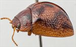
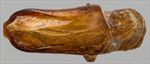
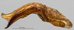
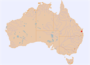

Click on images to enlarge


Male, Amamoor, SE Queensland


Aedeagus, dorsal view (Amamoor, SE Queensland)


Aedeagus, lateral view (Amamoor, SE Queensland)


Distribution
Name
Trachymela sp. Ta207
Reference specimen
25-052445, Amamoor, SE Queensland.
Adult Description
Length: ♂ 4.74 mm (n=1), ♀ unknown.
Colouration:
- Head: Uniformly mid-brown, dark brown or black-tipped mandibles; antennomeres straw-brown, distal 3 segments tinged fractionally darker.
- Pronotum: Brown, concolorous with head, with 2 very roughly triangular black maculae situated one on each side of disc, with one side along posterior margin of pronotum between humeral callus and halfway to scutellum, the 2nd side extending from posterior margin anteriorly to a short distance before anterior edge along discal margin, the 3rd side runs obliquely towards humeral callus and is rather ragged, the foveal area around and just anterior to central elevation is fractionally darker than surrounding area.
- Scutellum: Brown, fractionally lighter shade than pronotum, with thin dark brown border.
- Elytra: Brown, concolorous with pronotum, with a black quadrate area straddling the elytral summit, a dark brown patch is located at the base of elytron, just above humeral callus, delimited by a ridge halfway to scutellum at top and extending posteriorly to almost touch the black area at elytral summit, a broad very dark brown band extends along discal edge, from humeral callus to about its centre, then runs obliquely across disc to suture about halfway between summit and apex; posterior third of disc, especially along margin and near suture has dark brown patches with the dark shade in these areas including the verrucae and some of surrounding elytral surface; punctures are similar to or a very slightly darker shade than interstices, humeral callus black.
- Venter & Legs: Light brown with metaventrite darker in shade, at least laterally, legs light brown, inside surface of elytral epipleura brown.
- Cuticular Wax: Unknown, though likely to be similar to Ta11, with cuticular wax concentrated in the pale area extending from humeral callus to suture just posterior to dark quadrate area.
Morphology:
- Shape: Almost uniformly rounded from scutellum to apex, moderately high (H: ♂ 46% BL, ♀ unknown), elytral summit clearly in front of middle of elytral margin.
- Head: punctures moderately large (pd ≈ 2–2.5 × ef) and relatively evenly and densely distributed. Antennae short (AL: ♂ 38.4% BL, ♀ unknown), filiform.
- Pronotum: Almost evenly curved transversely, foveal depression shallow and present only near anterior edge, foveal pustule very poorly defined, discal area with surface somewhat uneven and puncturation clearly impressed, punctures similar in size to those on head, evenly distributed and relatively dense (spacing ≈ 1.5–2.5 pd), becoming much more coarse at lateral margins. Front margins join lateral margins in a smoothly rounded right-angle, with lateral margin curving smoothly and initially very gradually before rate of curvature increases towards rear margin, broadest just in front of posterolateral angle.
- Scutellum: Smooth and unpunctured.
- Elytra: Surface smoothly curved laterally with margins not explanate, a slightly elevated and relatively smooth (and black) quadrate area around the elytral summit where punctures are less deeply impressed than elsewhere, punctures elsewhere distinct and moderately large, closely spaced with very convex interstices, evenly distributed over anterior two-thirds of surface, surface more granular in posterior third, with much smaller punctures scattered sparsely on the interstices, elytral surface very vaguely depressed just anterior to centre, verrucae are small and mostly quite inconspicuous, present primarily in posterior half, not aligned transversely or longitudinally and most with a small central puncture, surface of disc along discal margin in posterior third rough, with an evenly spaced row of deeply impressed punctures along discal margin, punctures in marginal area large and more widely spaced than on disc, posterior third of elytral suture carinate, lateral margin straight, surface continuous under humeral callus. Vertical extension of epipleurae considerable (HCE/PW = 0.42).
- Venter: Prosternal process almost parallel (?), open or lightly closed anteriorly (?), a single long seta present on each anterior, median and posterior trochanter; front edge of metaventrite beveled; inner edge of posterior of epipleura lacking setae.
Male Genitalia (Aedeagus):
- Dimensions: Short (LPE = 33.3% BL).
- Dorsal view: Sides sinuate, widest just past basal sulcus then narrowing gradually to about middle before widening again to widest point near ostial opening, from where the sides curve inwards smoothly towards apex, tip in shape of a wide rectangle, dorsal surface lightly sclerotized almost back to basal sulcus, dorso-median channel thin but clearly defined, dorso-lateral channels well-defined, dorsal ostial processes extend forward to about level of apex, ostial opening large.
- Lateral view: Curved at about 45° a little anterior to basal sulcus, then quite straight until shortly before apex, tip deflexed.
Immature Stages
Unknown.
Similar species
- Ta11: All of the males of Ta11 examined are larger than this specimen, they all have either no black or a small black spot in the foveal area of the pronotum compared to the relatively large patch of Ta207, the lateral elytral margin is much smoother with evenly spaced and sized punctures in this specimen of Ta207 and its antennae are about 6% longer than is typical for a small specimen of Ta11. However, it needs to be kept in mind that it is impossible to assess the amount of variation in these characters from a single specimen. The aedeagus of Ta207 is very different to that of Ta11.
- Ta34:
Notes
- Taxonomy: Identified as Trachymela stigma (Blackburn) by B.J. Selman in 1978. Blackburn indicates that stigma occurs in Victoria, N.S.W. and South Australia. The type specimen of Paropsis stigma in the BMNH is a female, 6.2 mm in length. It has the black blotch on the elytral summit, but its size and its locality of Victoria make it much more likely that it is Ta34 or possibly a large specimen of Ta11.
- Distribution & Abundance: Only a single male of this small species is known with certainty, though it is possible that some of the very small females collected in south-eastern Queensland and attributed to Ta11 actually belong to this species.
- Host Associations: No host is recorded for Ta207.
Copyright © 2026. All rights reserved.